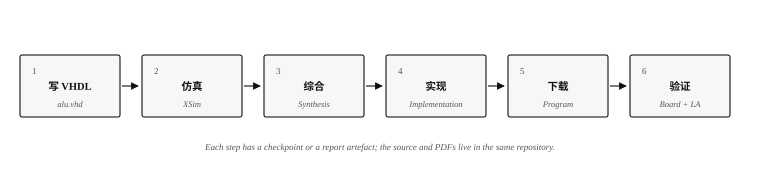
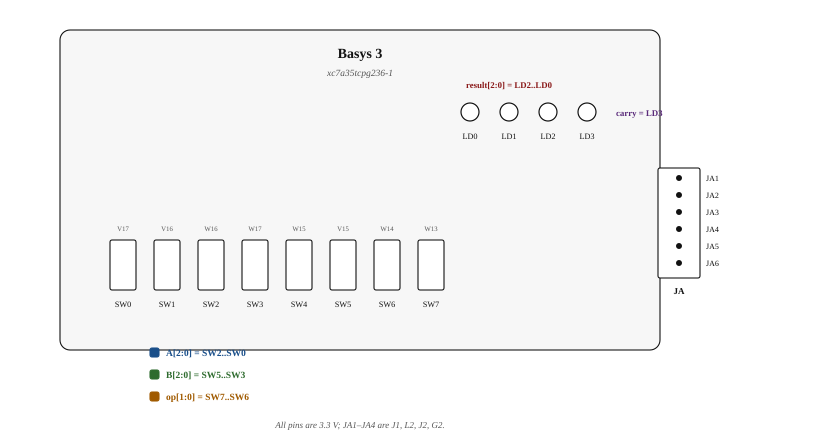
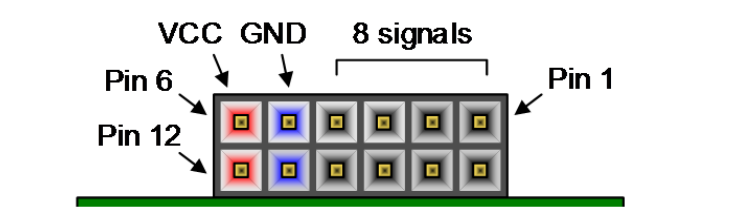
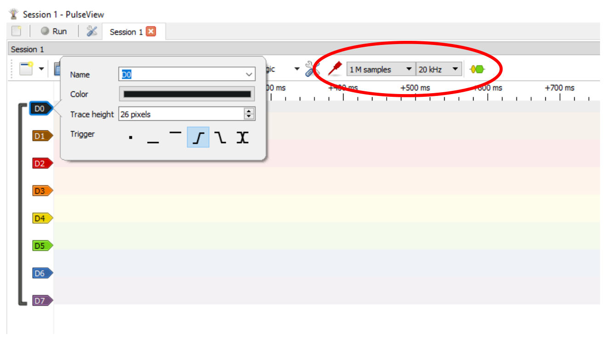

这份指南按“进实验室之前 → 现场演示 → 交报告之前”的顺序写。Lab 3 有 4 个检查点：检查点 1、2、4 要当场给演示者看，检查点 3 只写在报告里，不需要现场演示。每个检查点下面都写了“做什么、算通过的标准、要留下什么证据”，最后还有演示时可以直接照着说的话。
建议今晚的顺序是：先建工程并跑通仿真（检查点 1），再综合、实现、下载并测板级（检查点 2），然后接逻辑分析仪（检查点 4），最后用剩下的时间补截图和报告（检查点 3）。不要先接逻辑分析仪，因为板级设计没下载成功时，分析仪上什么也看不到。

| 检查点 | 要做什么 | 算通过的标准 | 谁看 |
|---|---|---|---|
| CP1 | 仿真 ADD、AND、XOR、SHR 四段 | 四段结果分别为 000/001/110/010；carry 只在 ADD 为 1；dup 与主输出一致 | 演示者 |
| CP2 | 下载后测 10 组输入 | LED 与表 4 一致，能解释 7+1 的 1000 和 7+7 的 1110 | 演示者 |
| CP3 | 报告写 7 种运算的改法 | 有运算表、代码片段、进位与保留编码的说明 | 报告评分 |
| CP4 | 逻辑分析仪抓 D0–D3 | 能指出触发通道、采样率、D3 何时为 1 | 演示者 |
最容易丢分的地方不是代码，而是“做出来了但讲不清”。演示时每个检查点用 30–60 秒说清楚三件事：我做了什么、预期是什么、实际看到什么。下面每一节都给出可以直接使用的说法。
确认 lab3 文件夹里下面这些文件都在：
| 文件 | 用途 | 今晚什么时候用 |
|---|---|---|
| EE2000_Lab3_中文版.pdf | 中文实验手册 | 到场前/现场查要求 |
| EE2000_Lab3_Report.pdf | 英文报告（完整草稿） | 写报告、对照表 |
| EE2000_Lab3_Report_中文版.pdf | 中文报告（完整草稿） | 写中文报告 |
| EE2000_Lab3_检查点达成指南.pdf | 本指南 | 现场照着做 |
| src/alu.vhd | 3 位 ALU 设计 | CP1、CP2 |
| src/alu_tb.vhd | 四段激励的测试平台 | CP1 |
| src/alu.xdc | Basys 3 引脚约束 | CP2 |
| src/create_project.tcl | 一键建 Vivado 工程 | 开工 |
| src/alu_7ops.vhd | 七种运算的扩展设计 | CP3 |
| src/alu_7ops_tb.vhd | 七运算测试平台 | CP3（可选） |
| src/alu_expected.csv | 256 组预期值 | 核对/写报告 |
两种方式选一种。第一种最省事：打开 Vivado 的 Tcl Console，cd 到 lab3/src，执行：
source create_project.tcl
它会创建 lab3_alu 工程，器件设为 xc7a35tcpg236-1，并加入 alu.vhd、alu_tb.vhd、alu.xdc，顶层设为 ALU。如果 Tcl 脚本因为路径或权限失败，就用手动方式：新建工程 → 选对器件 → Add Sources 加三个文件 → 把 ALU 设为顶层。
检查三件事：
xc7a35tcpg236-1（Basys 3）。手册里可能写成 xc7a35ticpg236-1L，以 Vivado 器件列表里的 xc7a35tcpg236-1 为准。alu.vhd 的实体名是 ALU，与文件名一致。alu.xdc 已经在 Constraints 里，没有被 disable。
alu_tb 设为 Simulation Top（右键 → Set as Top），或在 Tcl Console 执行 set_property top alu_tb [get_filesets sim_1]。launch_simulation、run all。A、B、op、result、carry、dup_result、dup_carry 都加进来，Radix 设为 Binary。| 时间段 | op | 运算 | result | carry | dup_result | dup_carry |
|---|---|---|---|---|---|---|
| 0–10 ns | 00 | ADD | 000 | 1 | 000 | 1 |
| 10–20 ns | 01 | AND | 001 | 0 | 001 | 0 |
| 20–30 ns | 10 | XOR | 110 | 0 | 110 | 0 |
| 30–40 ns | 11 | SHR | 010 | 0 | 010 | 0 |
截两张：一张是 alu_tb.vhd 的代码窗口（能看出四段 wait for 10 ns），一张是完整波形窗口（能看出四段结果和 carry）。文件名建议 cp1_tb.png、cp1_waveform.png。如果演示者只看一张，就给波形，但要能指着说“这一段是 ADD，carry 在这里为 1”。
如果被问“为什么不用随机激励”：四段定值是为了让四个结果互不相同，操作码接反时一眼能看出来；随机激励适合跑覆盖率，不适合 30 秒演示。
lab3_alu.bit，点 Program。按表 4 拨开关。开关模式按 SW7 到 SW0 写，具体哪个物理开关对应哪一位，以板上印的标签为准；不要从左往右数。每测完一组，在“实测”一栏打勾，并在报告里把“预期”改成你实际看到的模式。
| # | A | B | op | result | carry | LD3..LD0 | SW7..SW0 |
|---|---|---|---|---|---|---|---|
| 1 | 011 | 010 | 00 | 101 | 0 | 0101 | 00 010 011 |
| 2 | 111 | 001 | 00 | 000 | 1 | 1000 | 00 001 111 |
| 3 | 110 | 011 | 00 | 001 | 1 | 1001 | 00 011 110 |
| 4 | 111 | 111 | 00 | 110 | 1 | 1110 | 00 111 111 |
| 5 | 110 | 101 | 01 | 100 | 0 | 0100 | 01 101 110 |
| 6 | 101 | 011 | 01 | 001 | 0 | 0001 | 01 011 101 |
| 7 | 101 | 011 | 10 | 110 | 0 | 0110 | 10 011 101 |
| 8 | 110 | 101 | 10 | 011 | 0 | 0011 | 10 101 110 |
| 9 | 101 | 000 | 11 | 010 | 0 | 0010 | 11 000 101 |
| 10 | 111 | 000 | 11 | 011 | 0 | 0011 | 11 000 111 |
两组最容易误判：
拍一张照片：开关位置 + LED 同时入镜，最好能看出你正在测哪一组。文件名 cp2_board.jpg。
如果被问“为什么 7+1 的 LED 不是 0000”：因为 LD3 接的是 carry，不是 result 的第四位；result 只有三位。
这一项不现场演示，但要写在报告里。最简单的答法是：把 op 从 2 位扩到 3 位，输出选择从四选一变成八选一，加法器由 ADD 和 SUB 共用，移位组增加 SHL，保留编码 111 输出 000。
| op[2:0] | 运算 | result | carry |
|---|---|---|---|
| 000 | ADD | (A+B) mod 8 | A+B ≥ 8 |
| 001 | SUB | (A−B) mod 8 | A ≥ B（无借位） |
| 010 | AND | A and B | 0 |
| 011 | OR | A or B | 0 |
| 100 | XOR | A xor B | 0 |
| 101 | SHR | A >> 1 | 0 |
| 110 | SHL | A << 1 | 0 |
| 111 | 保留 | 000 | 0 |
报告里至少写清三点：
diff(3)=1 表示 A < B（有借位），所以 carry = not diff(3) 才是“无借位”。'Z'；三态会推断出总线缓冲，不是内部多路选择器。代码用 src/alu_7ops.vhd，报告里贴 result_t 和 carry_t 两个选择赋值即可，不需要贴整个文件。图 3 可以用来解释数据通路。
先把板子设成 A = 000、B = 000、op = 00，再接线。接线顺序：
接好后先看一眼：黑线是否在 GND 那一列，而不是 VCC。接错会得到一条直线，甚至损坏输入。

fx2lafw 兼容的逻辑分析仪）。
| 通道 | JA | 信号 | 含义 |
|---|---|---|---|
| D0 | JA1 | dup_result[0] | 结果最低位 |
| D1 | JA2 | dup_result[1] | 结果第 1 位 |
| D2 | JA3 | dup_result[2] | 结果最高位 |
| D3 | JA4 | dup_carry | 进位 |
前八步 B = 000，结果等于 A：D0 每步翻转，D1 每两步翻转，D2 每四步翻转，D3 一直是 0。最后一步 A = 111、B = 001，7 + 1 = 8，结果 000、进位 1，所以 D3 变高、D0–D2 变低。

如果被问“为什么要触发”：手拨开关的时刻不确定，触发让采集从 JA1 的上升沿开始，波形才有稳定的起点；预触发样本还能看到触发前的一小段。
| 现象 | 可能原因 | 处理 |
|---|---|---|
| 综合报 srl/sll 未定义 | 对 STD_LOGIC_VECTOR 直接移位 | 用 to_bitvector / to_stdlogicvector 转换 |
| 仿真只有最后一段 | 进程末尾没有 wait，或没有 wait for | 每段后 wait for 10 ns，末尾 wait; |
| 波形全是 X/U | 信号没有初值，或端口映射错 | 给初值，改用具名关联 |
| 实现报 unplaced ports | XDC 名字与 VHDL 不一致 | 改成 {A[0]} 这种带下标的名字 |
| DRC 报 IOSTANDARD | 引脚缺电平标准 | 每个引脚加 IOSTANDARD LVCMOS33 |
| Hardware Manager 找不到板子 | 电源/线/驱动 | 开电源，换数据线，装 cable driver |
| LED 全灭 | 没下载成功，或结果就是 000 | 看 LD3 进位；重新 Program |
| LED 与开关不对应 | 开关组顺序记反 | 按板上标签，A0 是 SW0 |
| JA 没有信号 | XDC 缺 JA，或没下载 | 检查 dup_result/dup_carry 约束 |
| PulseView 找不到设备 | USB/驱动/设备选错 | 换线，重插，选 fx2lafw |
| 采集是直线 | 黑线接 VCC，或通道接错 | 黑线接 GND，核对 JA1–JA4 |
| 触发不启动 | 边沿/通道设错 | D0、Rising edge，先 Run 再拨开关 |
| 窗口太短 | 采样率太高/点数太少 | 改 1 M @ 20 kHz |
| 台阶处有窄脉冲 | 开关抖动 | 正常现象，不是 ALU 故障 |
EE2000_Lab3_Report.pdf / EE2000_Lab3_Report_中文版.pdf。本指南中的板级结果和逻辑分析仪波形是按设计推算的预期值；做完实验后，请用你实际看到的 LED 模式、照片和波形替换报告中的对应内容，再提交。